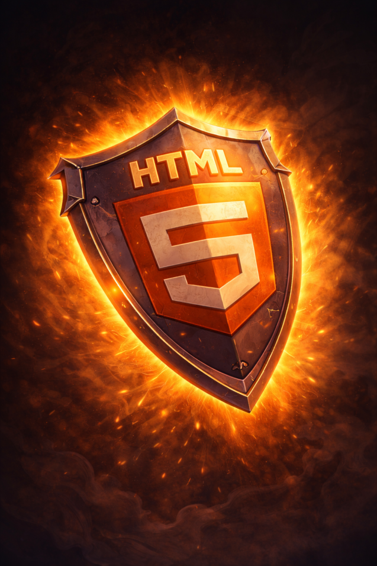
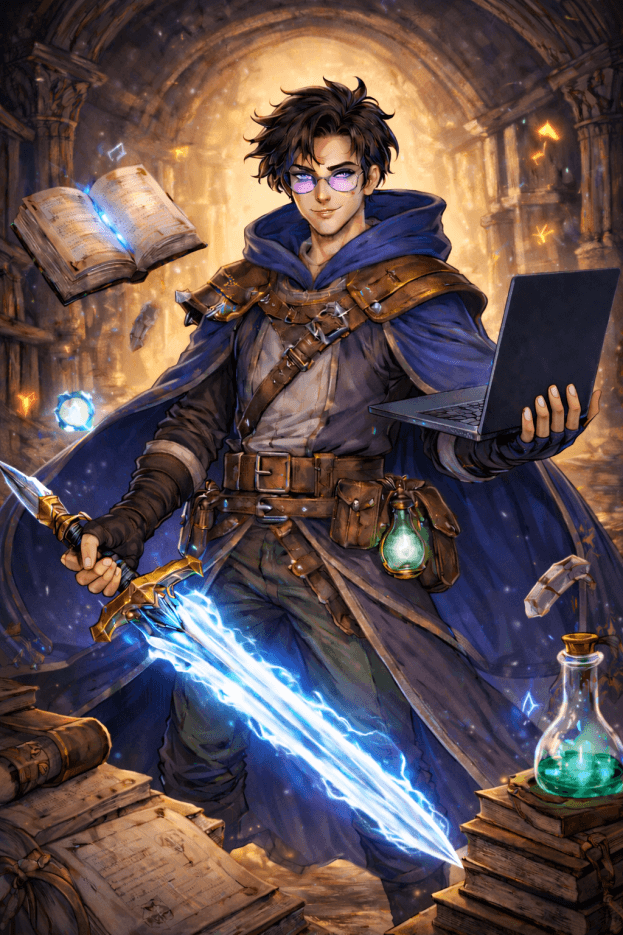
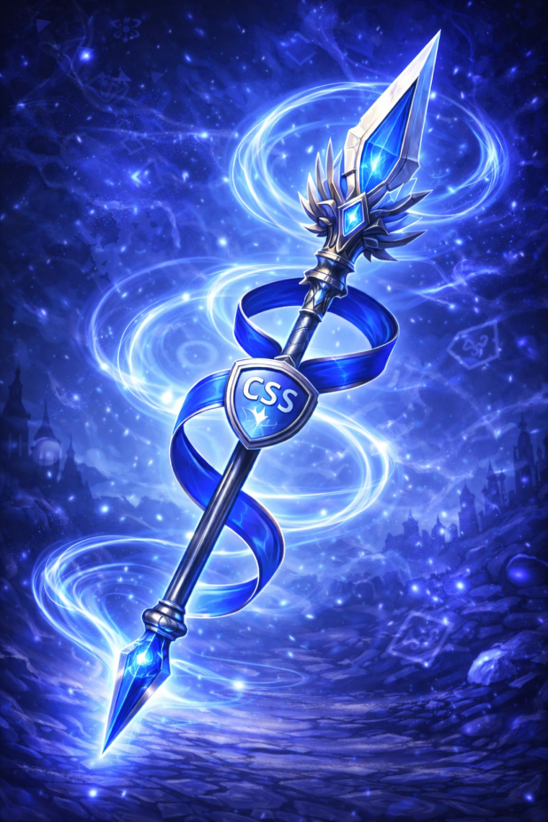
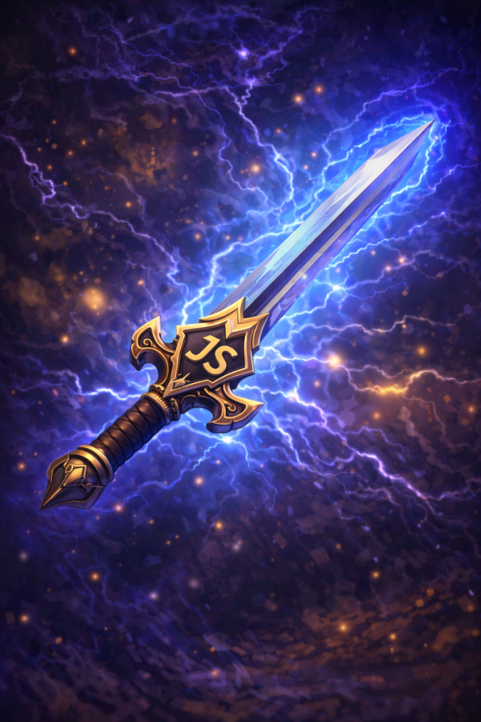
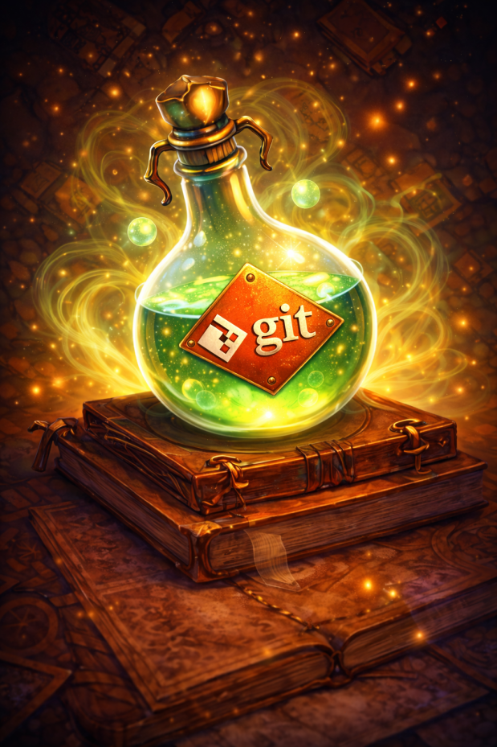

HTML Shield
Crafts structured and semantic web foundations with precision.

This Odin warrior symbolizes a developer committed to fundamentals, discipline, and continuous improvement. Built through hands-on practice and real problem-solving, every skill is earned—not assumed. The journey is guided by The Odin Project, where learning is deliberate and craftsmanship comes first.

Crafts structured and semantic web foundations with precision.

Shapes visual designs and layouts with control and elegance.

Implements dynamic and interactive web experiences.
Identifies and resolves issues to keep code battle-ready.

Tracks changes, coordinates work, and preserves history.
Executes commands, navigates systems, and automates tasks.